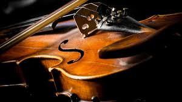

Home
Musical Instruments Classification
In the study of musical instruments, organology, there are many different methods of classifying musical instruments. Most methods are specific to a particular cultural group and were developed to serve the requirements of that culture and its musical needs. Such classification schemes often break down when applied outside of their original context. For example, a classification based on instrument use may fail when applied to culture which has a different use, or even multiple uses, for the same instrument.
Throughout history, various methods of musical instrument classification have been used by musicians & scholars. The most commonly used system divides instruments into string instruments (often divided into plucked and bowed), wind instruments (often divided into woodwind and brass), and percussion instruments with modern classifications adding electronic instruments as a distinct class of instrument; however, other schemes have also been devised.
The original Sachs-Hornbostel system classified instruments into four main groups:
- Idiophones: such as the xylophone, which produce sound by vibrating themselves
- Membranophones: such as drums or kazoos, which produce sound by a vibrating membrane
- Chordophones: such as the piano or cello, which produce sound by vibrating strings
- Aerophones: such as the pipe organ or oboe, which produce sound by vibrating columns of air.
Elementary organology categorizes musical instruments by their classical element:
| Element | State | Category | ||
| 1 | Earth | solids | gaiaphones | the first category proposed by Andre Schaeffner |
| 2 | Water | liquids | hydraulophones | |
| 3 | Air | gases | aerophones | the second category proposed by Andre Schaeffner |
| 4 | Fire | plasmas | plasmaphones | |
| 5 | Quintessence/Idea | informatics | quintephones |
Western Instruments
That was just a brief explanation of musical instruments and how they are categorized. But today we want to talk about Western instruments. But today we are going to be talking about the instruments used in playing classical music. There are main grouped into 4 parts.
We would be talinkg about 2 instruments from the Strings family, the Brass family then one from the woodwind family.

The violin, sometimes known as a fiddle, is a wooden chordophone (string instrument) in the violin family. Most violins have a hollow wooden body. It is the smallest and thus highest-pitched instrument (soprano) in the family in regular use. The violin typically has four strings, (some can have five), usually tuned in perfect fifths with notes G3, D4, A4, E5. Read more.
The clarinet is a type of single-reed woodwind instrument. Like many wind instruments, clarinets are made in several different sizes, each having its own range of pitches. All have a nearly-cylindrical bore and a flared bell, and utilize a mouthpiece with a single reed. A person who plays a clarinet is called a clarinetist (sometimes spelled clarinettist). While the similarity in sound between the earliest clarinets and the trumpet may hold a clue to its name.Read more.

The trumpet is a brass instrument commonly used in classical and jazz ensembles. The trumpet group ranges from the piccolo trumpet with the highest register in the brass family, to the bass trumpet, which is pitched one octave below the standard Bâ™ or C Trumpet. Trumpet-like instruments have historically been used as signaling devices in battle or hunting, with examples dating back to at least 1500 BC. They began to be used as musical instruments only in the late 14th or early 15th century. Read more.
The tuba is the lowest-pitched musical instrument in the brass family. As with all brass instruments, the sound is produced by lip vibration-a buzz-into a mouthpiece. It first appeared in the mid-19th century, making it one of the newer instruments in the modern orchestra and concert band. The tuba largely replaced the ophicleide. Tuba is Latin for "trumpet". A person who plays the tuba is called a tubaist, a tubist.Read more.

The harp is a stringed musical instrument that has a number of individual strings running at an angle to its soundboard; the strings are plucked with the fingers. Harps can be made and played in various ways, standing or sitting and in orchestras or concerts. Its most common form is triangular in shape and made of wood. Some have multiple rows of strings and pedal attachments. Ancient depictions of harps were recorded in current day Iraq. Read more